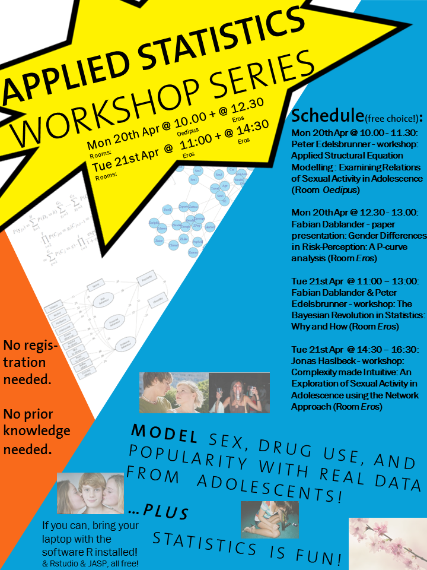
Applied Structural Equation Modelling for Psychology Students
Sex, Drugs, & Fancy Models
Peter A. Edelsbrunner
Resarch Assistant, ETH Zurich
What is SEM?
What can SEM do?
What are the pitfalls of SEM?
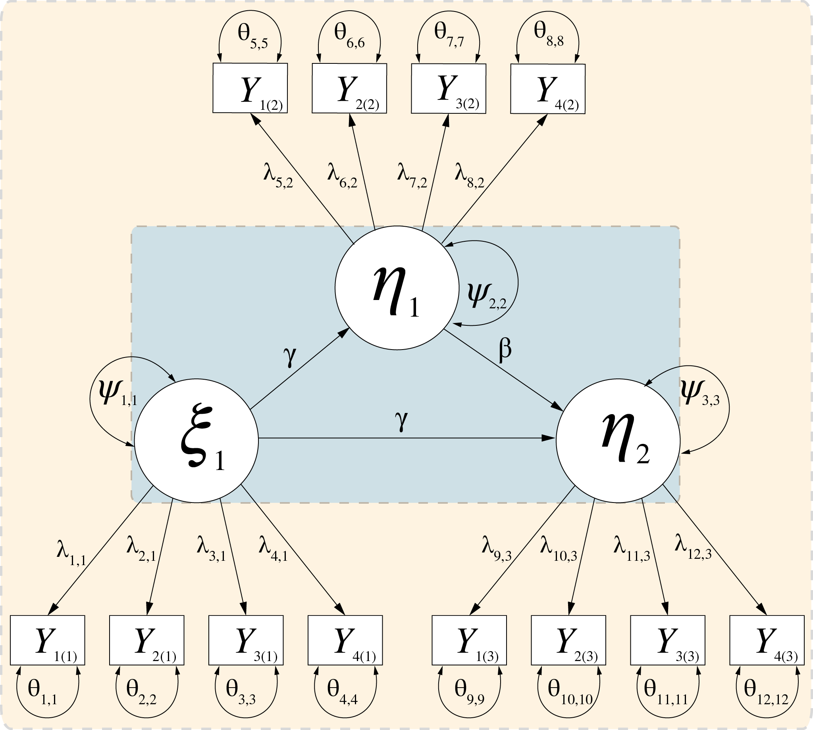
Equip yourselves!

Structural Equation Modelling (SEM)
A Million years ago...
(about 1970)
The Stats Universe!

The Stats Universe
The Stats Universe
The Stats Universe

The Stats Universe
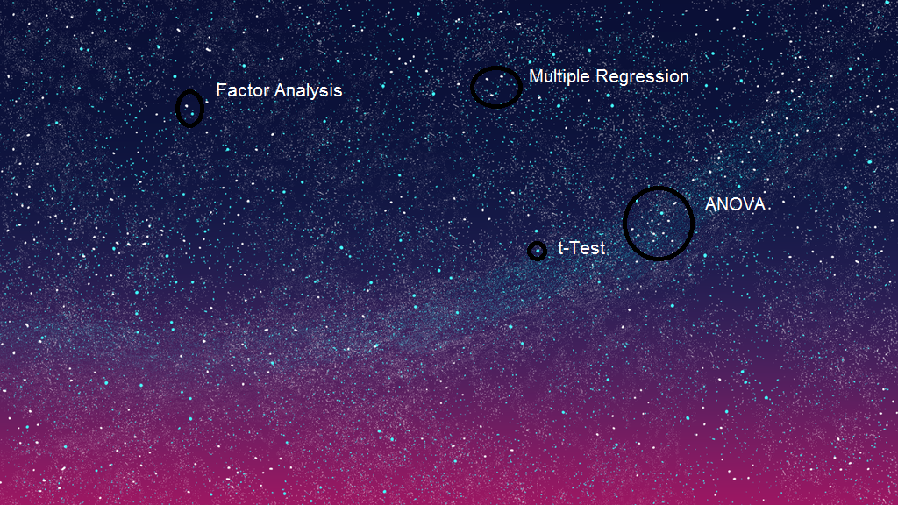
The Stats Universe
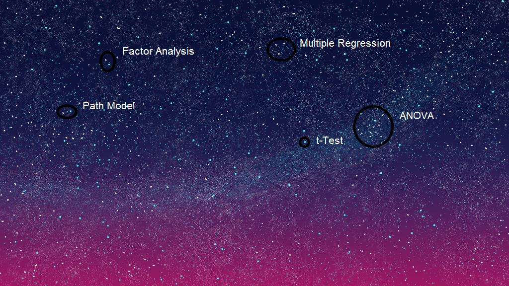
The Stats Universe
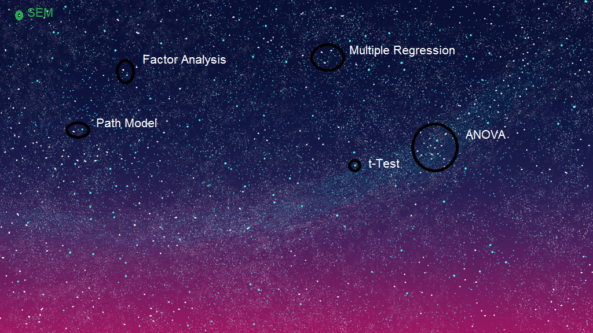
The Stats Universe
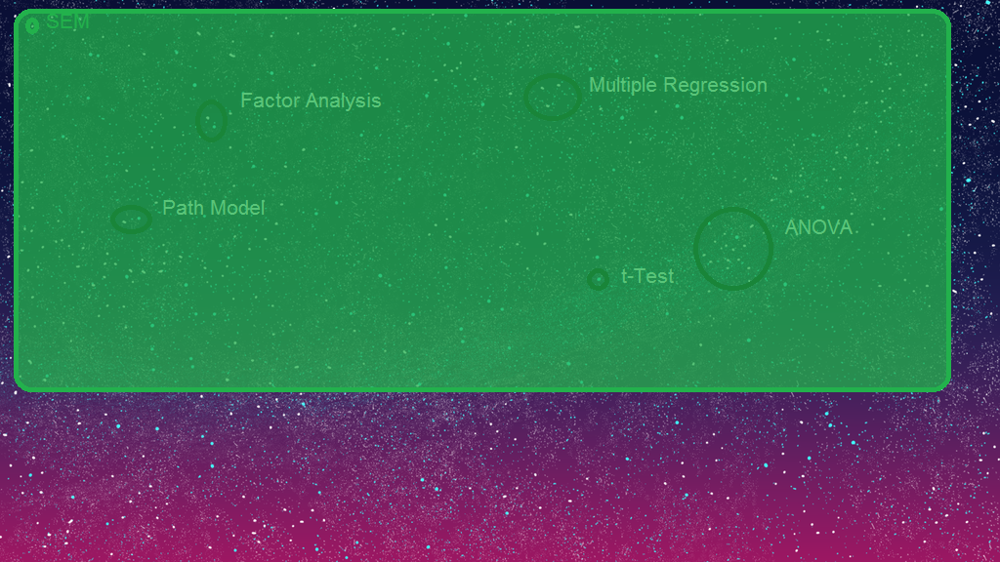
The World of
Structural Equation Modelling
What can
SEM do?
What can
SEM do?

Research Question
How are Risk Behaviour and Social Status Related in Adolescence?
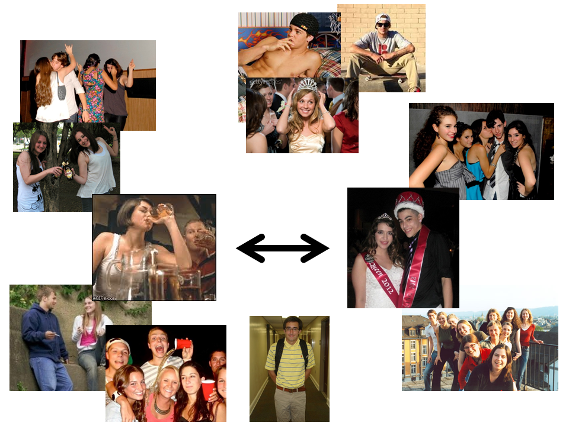
Data
N = 408 students, about 17 years, from Austria, the Netherlands
Risk behaviour
- Sex (Intercourse) Drugs (Tobacco, Alcohol, Marijuana)
Social status
- Popularity ("who is popular?") Likeability ("who yo dou like?")
Prosocial behaviour
- Who is nice? Who is helpful? Who cheers others up?
Antisocial behaviour
- Who is mean? Who bullies others? Who excludes others?
Positive characteristics
- e.g., Sporty, good in school
Software preparation
open R!
# Set working directory Change into your own directory Where the
# workshop-files are placed! Attention: When you copy the directory from
# explorer, change backslashes into slashes!
setwd("C:/Users/petere/Desktop/SEM_WS")
Software preparation
# Install packages needed for analysis
install.packages("lavaan", "semPlot", "psych")
# Load packages needed for analysis
library(lavaan) # Package for SEM
library(semPlot) # Package to draw SEMs
library(psych) # Package for descriptive statistics
Loading and preprocessing the data
# Read data from SPSS file into dataframe
risk <- read.table("riskdata.txt")
View(risk)
Does gender influence the frequency of risk behaviour?
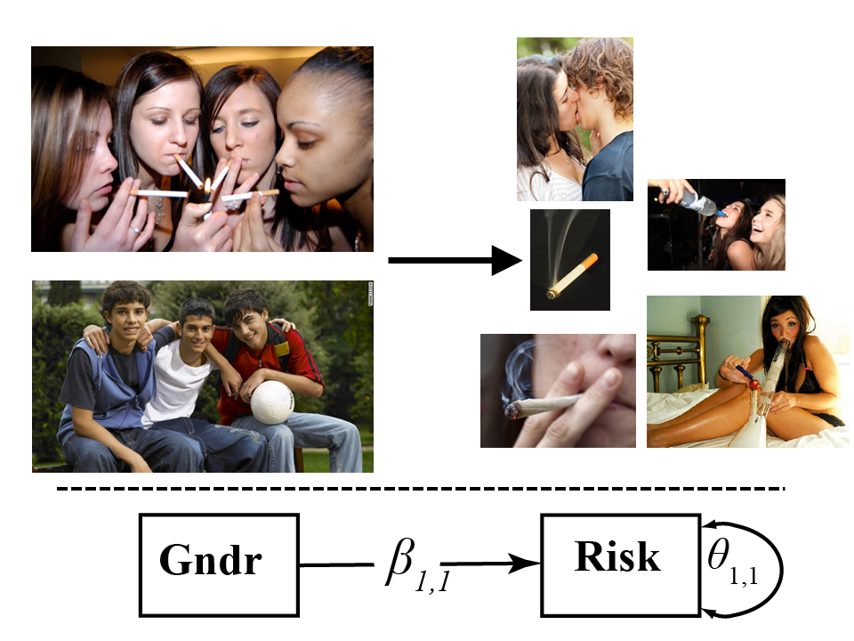
The Stats Universe
The Stats Universe
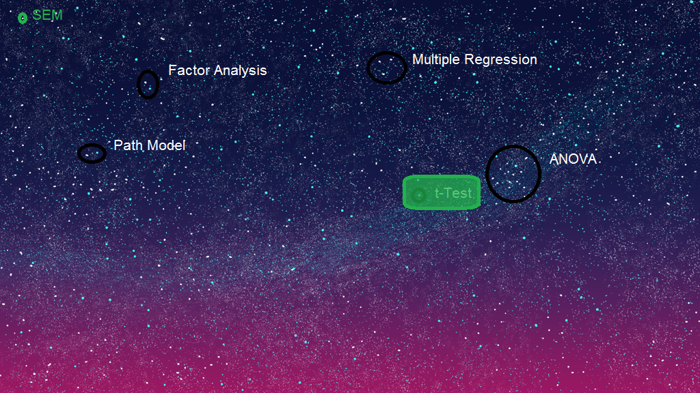
t-Test
# 2.2 Using regular t-test
summary(lm(risksum~Gender))
# 2.3 Using SEM t-test model
model2 <- '# Regressions: t-test model
risksum~Gender'
fit_model2 <- cfa(model2,
data=risk,
missing="ml")
summary(fit_model2)
Does risk behaviour depend on adolescents' gender and bedroom availability?
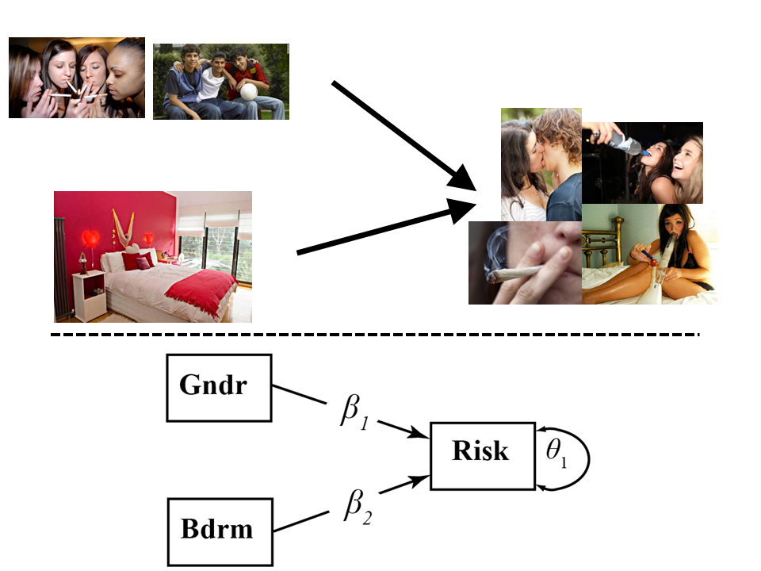
The Stats Universe
The Stats Universe
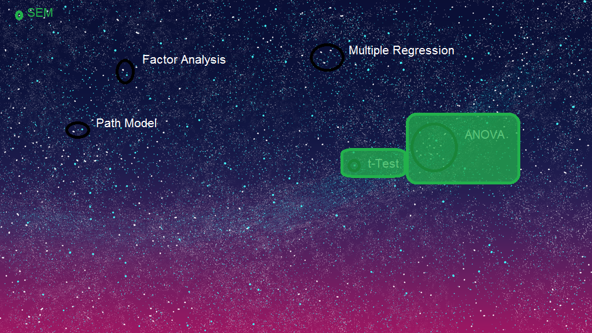
ANOVA
## 3 Model 3
# ANOVA:
# Boys vs. Girls, Bedroom "availability"
# 3.1 Graphical inspection
plot(risksum~Bedroom) # Box plot
# 3.2 Using regular ANOVA
summary(lm(risksum~Gender + Bedroom))
# 3.3 Using SEM ANOVA model
model3 <- '# Regressions: ANOVA model
risksum~Gender + Bedroom'
fit_model3 <- cfa(model3,
data=risk,
missing="ml")
summary(fit_model3)
summary(lm(risksum~Gender + Bedroom))
Does risk behaviour depend on adolescents' popularity and likeability?
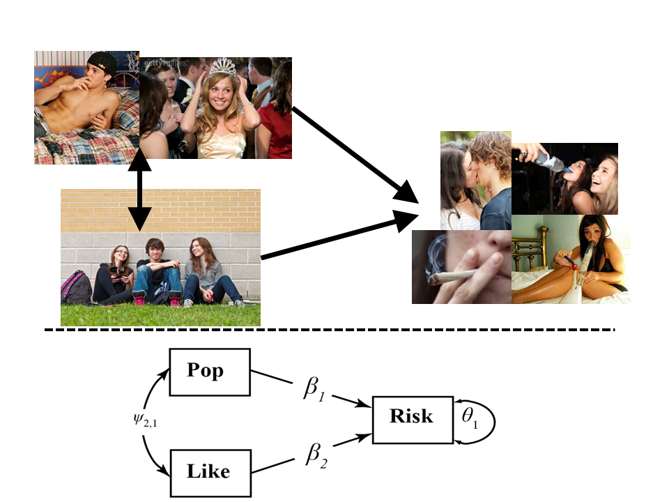
The Stats Universe
The Stats Universe
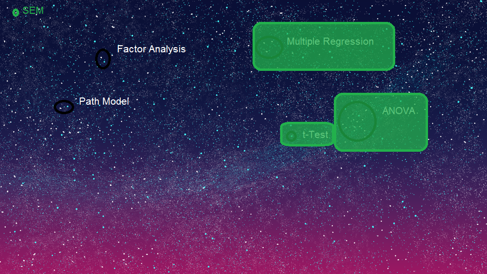
Multiple Regression
# 4.1 Using regular multiple regression
summary(lm(risksum~ZPop+ZLike))
# 4.2 Using SEM
model4 <- '# Regression: Multiple
risksum~ZPop+ZLike'
fit_model4 <- cfa(model4,
data=risk,
missing="ml")
summary(fit_model4)
summary(lm(risksum~ZPop+ZLike))
Is there a general tendency to engage in risk behaviour?
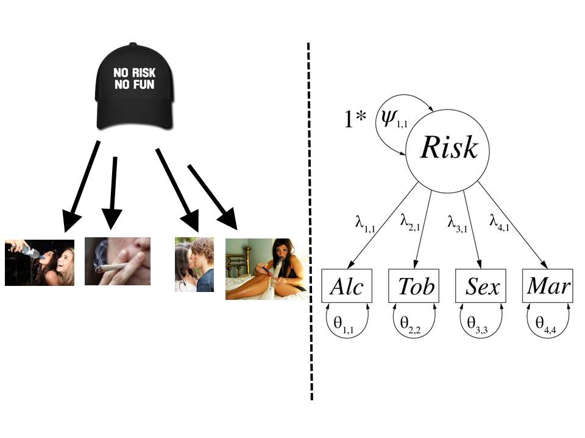
The Stats Universe
The Stats Universe
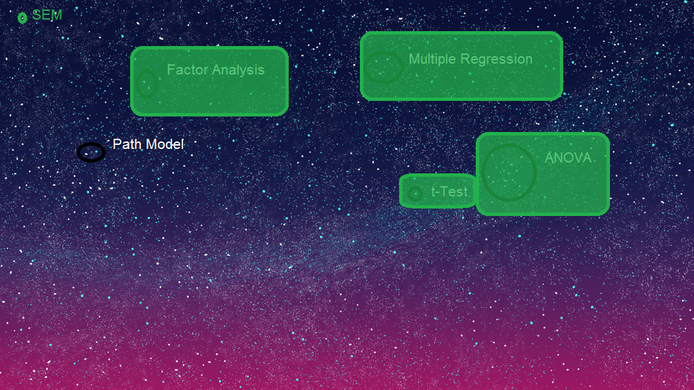
Confirmatory Factor Analysis
model5 <- '# CFA: Unidimensional model
# Risk Behaviour Factor
Risk=~AvrSex + AvrTob + AvrAlc + ZMar1
'
fit_model5 <- cfa(model5,
data=risk,
missing="ml")
summary(fit_model5,
fit.measures = TRUE,
standardized = TRUE)
Does engagement in sports lead to less smoking, in turn leading to less popularity?
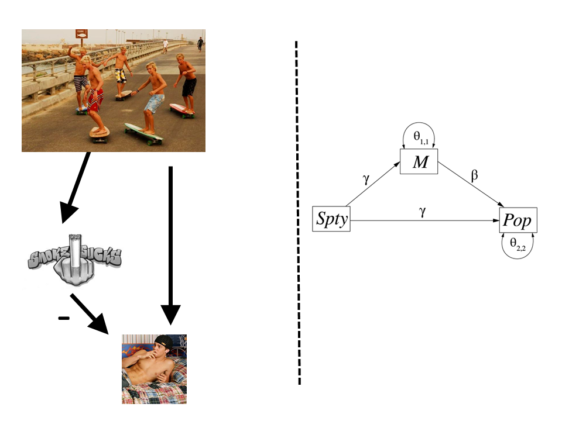
The Stats Universe
The Stats Universe
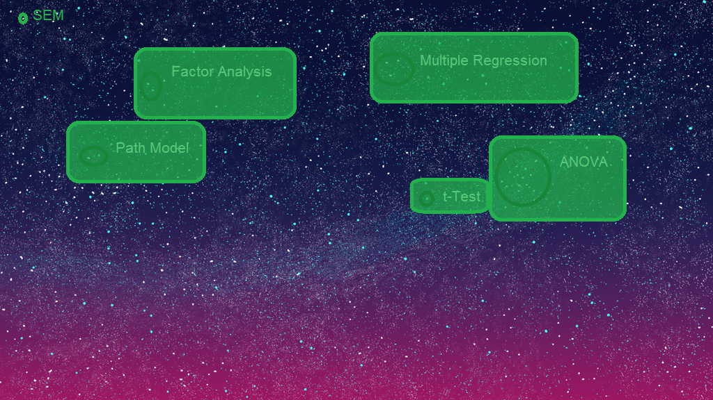
Path Analysis
model6 <- '# Mediation model
# Risk Behaviour Factor
ZPop ~ AvrTob + Zsport
AvrTob ~ Zsports
'
fit_model6 <- cfa(model6,
data=risk,
missing="ml")
summary(fit_model6,
fit.measures = TRUE,
standardized = TRUE)
Summary: What can SEM do?
- Estimate classical models
- Advantages in SEM: "Corrections" for Missing data, non-normality, clustered sampling
So What?
So What?
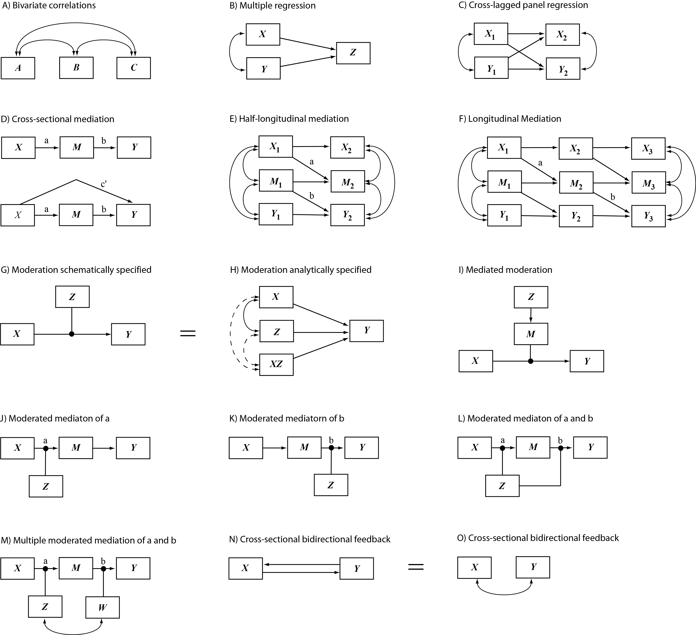
Full SEM power!
FIRST STRIKE
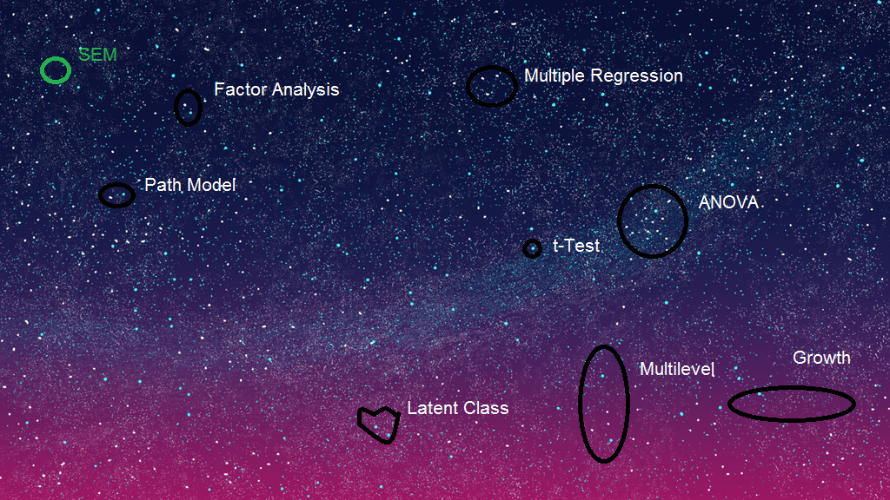
Full SEM power!
FIRST STRIKE
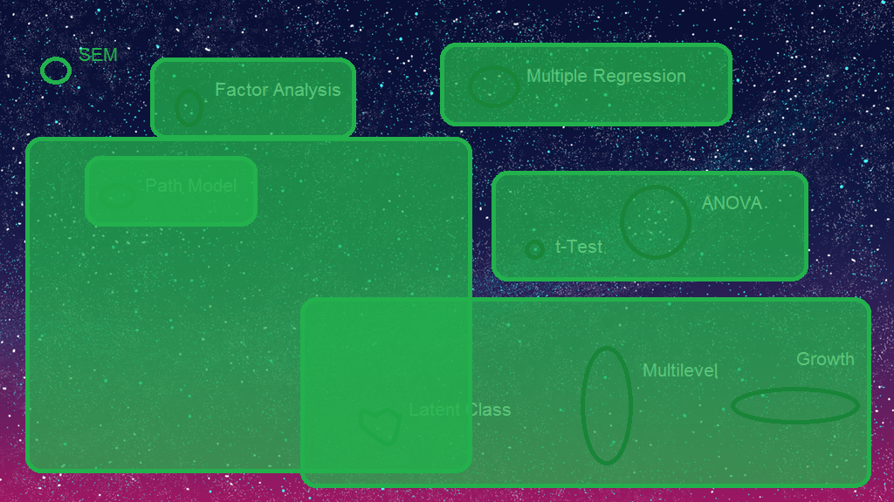
- Item Response Theory (IRT)
- Multilevel (hierarchical/mixed) Modelels
Full SEM Power!
SECOND STRIKE
Combine Latent Variables with Structural (Path) Models
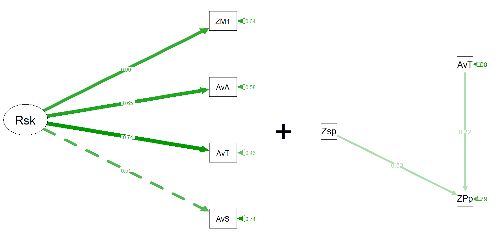
Full SEM Power!
SECOND STRIKE
Examine Complex Theories with Error Free Constructs
How does this work?
- Variance-covariance matrix
- Model-implied vs. empirical

A "Small " Theory...
model7 <- '# SEM:
# Risk Behaviour Factor
Risk =~ AvrSex + AvrTob + AvrAlc + ZMar1
# Regressions
ZPop ~ Risk
ZLike ~ Risk
# Correlation
ZLike ~~ ZPop
'
fit_model7 <- sem(model7,
data=risk,
missing="ml",
estimator="MLR",
fixed.x=FALSE)
summary(fit_model7,
fit.measures = TRUE,
standardized = TRUE)
How does this work?
- Variance-covariance matrix
- Model-implied vs. empirical
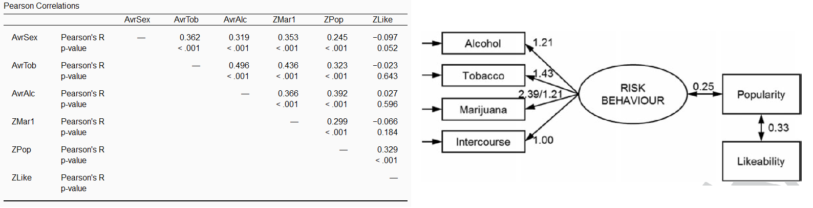
A "Small" Theory...

The Full Model
model8 <- '# SEM:
# Risk Behaviour Factor
Risk =~ AvrSex + AvrTob + AvrAlc + ZMar1
ProSoc =~ Zcheers + Zhelpful + Znice
AntSoc =~ Zmean + Zbullies + Zexclude
# Regressions
ZPop ~ Risk + ProSoc + AntSoc + Zattrac + Zsports
ZLike ~ ProSoc + AntSoc + Zattrac
# Correlations
ZPop ~~ ZLike
Risk ~~ Zsports
Risk ~~ 0*ProSoc
'
fit_model8 <- sem(model8,
data=risk, missing="ml",
estimator="MLR", fixed.x=FALSE)
summary(fit_model8, fit.measures = TRUE,
standardized = TRUE)
The Full Model

Pitfalls
Modeling weak measurement
SEM is not a panacea for weak measures!
- Questionnaire, coding system,...
High "internal consistency" reliability (Cronbach's Alpha) was yesterday!
- Not needed for SEM
Sem vs. IRT
- Item Response Theory
- Same model as confirmatory factor analysis (CFA) in SEM
- With categorical indicators
- Valid estimation possible in Mplus, Lavaan (R)
- Use weighted least squares (WLS) estimator
Software
R
Mplus
LISREL, OpenMX, SEM package, Stata
Figures
- AMOS Software: Graphical Interface

Mplus software: Diagram editor
R software: Lavaan + semPlot packages
Power point: Works fine!
Figures
- Adobe Illustrator: THE King of SEM figures
- See Little, 2013
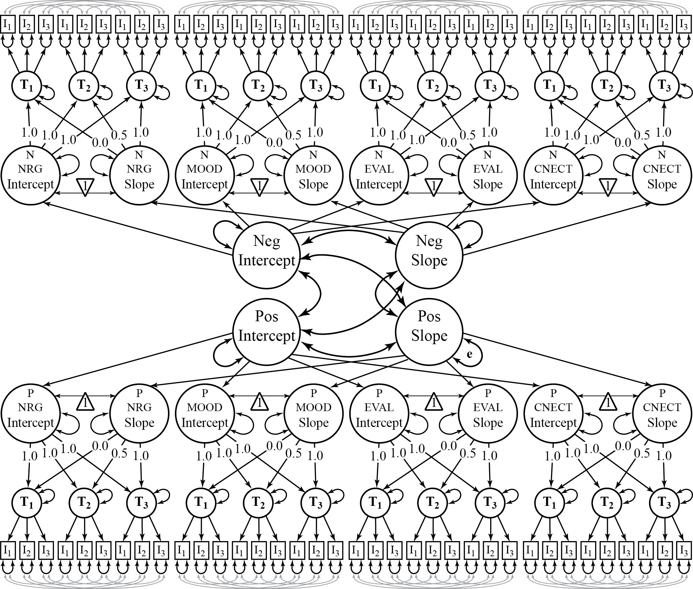
Learn more!: Software-based
Geiser, 2013
- Mplus-based
Byrne, 2011
- Various Editions: Mplus, AMOS, LISREL
Beaujean, 2014
- R: Lavaan-package
Learn more!: Advanced SEM
- Longitudinal models
- Little, 2013; McArdle & Nesselroade, 2014
- Great books!
- Hoyle, 2012
- Kline, 2011
Model fit statistics
Does my model adequately represent the data?
- Can I interpret the values of my output?
Fit statistics: RMSEA, CFI, SRMR
- Rules of thumb "for beginners"
Strong theory, inspection of residuals and modifications
- "You" know what to expect from the data
- Residual variances and covariances
- Modifcation indices: What would improve model fit?
Model fit 1/3
Hu & Bentler, 1999: Rules of thumb
- But see Heene, 2013
RMSEA
- Chi-square/number estimated parameters
- "Should be" <.06
CFI
- Comparison to strongly constrained null model
- "Should be" >.90
SRMR
- Average residual variance/covariance
- "Should be" <.11
Model fit 2/3
Rules of thumb are not mandatory!
Look at modification indices
- What would improve model fit?
Look at residual variances/covariances
- Where did I not model something that is there?
See Little, 2013
Model fit 3/3
- Theory tells most about model fit!
Overblown fancyness
- Don't assess 27 scales!
- SEM won't "reveal" anything
- Stick to theory! Little, 2013
Enjoy SEM responsibly! :)
References
- Beaujean, A. A., (2014). Latent Variable Modeling Using R: A Step-by-Step guide. Routledge.
- Byrne, B. (2011). Structural Equation Modeling with Mplus: Concepts, Applications, and Programming. Routledge & Chapman.
- Geiser, C. (2012). Data Analysis with Mplus. New York: Guilford Press.
- Hoyle, Rick H. Handbook of Structural Equation Modeling. New York: Guilford Press.
- Hu, Li-tze, and Peter M. Bentler. "Cutoff Criteria for Fit Indexes in Covariance Structure Analysis: Conventional Criteria versus New Alternatives." Structural Equation Modeling: A Multidisciplinary Journal, 1-55. doi:10.1080/10705519909540118.
- Kline, R. B. (2011). Principles and Practice of Structural Equation Modeling (3rd ed.). New York: Guilford Press.
- Little, T. (2013). Longitudinal Structural Equation Modeling. New York
- McArdle, J. J., & Nesselroade, J. R. (2014). Longitudinal Data Analysis Using Structural Equation Models. American Psychological Association.